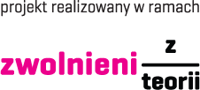
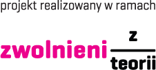

Jesteśmy grupą znajomych których łączy miłość do sportu i technologii. Wspólnie wpadliśmy na
pomysł stworzenia tej aplikacji, aby zrobić coś dobrego dla naszej lokalnej społeczności. Nasz projekt
ma na celu promocję zdrowego i aktywnego stylu życia. Chcemy pokazać jak różnorodny i ciekawy jest
świat sportu i że każdy może znaleźć w nim coś dla siebie. W aplikacji oprócz najpopularniejszych
obiektów, umieściliśmy także te mniej znane, o których często zapominamy, a które mogą okazać się
lepszymi alternatywami. Jest to nasz pierwszy tak duży projekt. Mimo braku doświadczenia dokładamy
wszelkich starań, aby aplikacja była jak najwyższej jakości. Mamy nadzieję, że spodoba Ci się efekt
naszej pracy!


 
